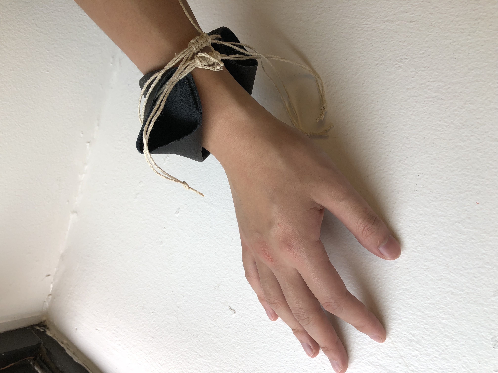
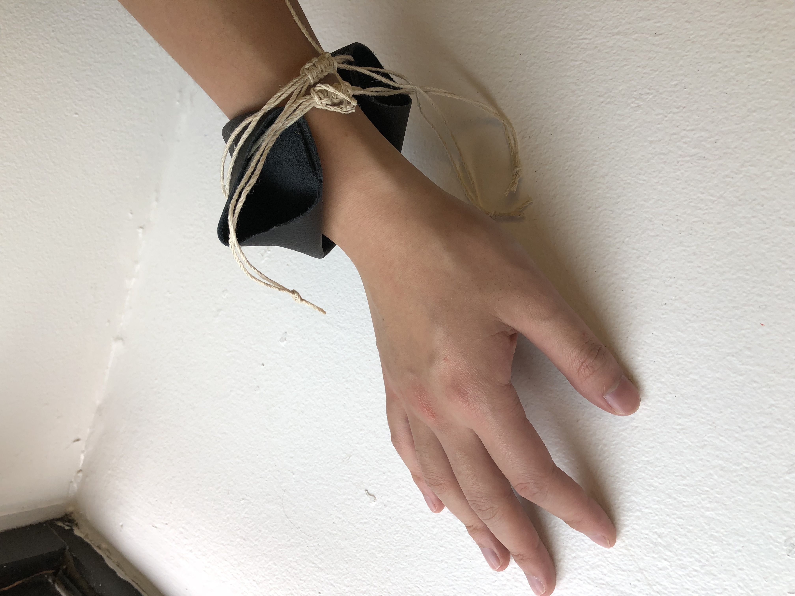

I have always been interested in transfering music into graphics. The anklet is made to be a wearble device that enable people to have individidual visual graphics based on the music they are listening on the their phones. The visual element could be a new way to show your personality and a tool to indicate the status of listening music. It is a device that transfering people's physical movement into a new formate of visual graphics
This could be a potential presentation of the generative graphics based on the audrino input.
Audrino MPU6050 GY521 - 6 Axis Accelerometer + Gyro Sensor
 

I started to work on how the actual product would look like and how I could assemble invidual modules together while keep it fit the size of anklet.